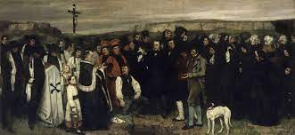

Jacques-Louis David
Jacques-Louis David
Height: 50in
Gustave Courbet
Height: 261in
Jean-Auguste Ingres
Height: 40in

James Abbott Whistler
Height: 68in
| Artist | Work Details | |||
|---|---|---|---|---|
|
Jacques-Louis David |
Work | Year | Size | |
| The Death of Marat Jacques-Louis David |
Copyright © 2021 Randy
Connolly
1793 | Width: 64in Height: 50in |
||
|  | Burial at Ornans Gustave Courbet |
1849 | Width: 124in Height: 261in |
|
| Betty de Rothschild Jean-Auguste Ingres |
1848 | Width: 56in Height: 40in |
||
|
Arrangement in Grey and Black James Abbott Whistler |
1871 | Width: 57in Height: 68in |
|